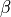

State Class
- class State(object)
FLAME beam state class for Python API.
Attributes - reference beam
z position [m]
Lorentz  [1]
Lorentz [1]
Lorentz
[1]
Kinetic energy [eV/u]
Nucleon mass [eV/u]
Macro weight [1]
Total energy [eV/u]
Charge to mass ratio [1]
Absolute phase [rad]
Sampling frequency [Hz]
Phase speed [rad]
Driven phase of the last rf cavity [deg]
Transfer matrix of the last element
Attributes - actual beam
Lorentz [1]
Lorentz [1]
Lorentz
Kinetic energy [eV/u]
Nucleon mass [eV/u]
Macro weight [1]
Total energy [eV/u]
Charge to mass ratio [1]
Absolute phase [rad]
Sampling frequency [Hz]
Phase speed [rad]
Centroids of the all charge states.
Weighted average of centroids for the all charge states.
Weighted average of rms size for the all charge states.
Envelope matrixes of the all charge states.
Weighted average of envelope matrixes for the all charge states.
- pos
float: z position of the reference beam. [m]
- ref_beta
float: Lorentz of the reference beam. [1]
- ref_bg
float: Lorentz of the reference beam. [1]
- ref_gamma
float: Lorentz
- ref_IonEk
float: Kinetic energy of the reference beam. [eV/u]
- ref_IonEs
float: Nucleon mass of the reference beam. [eV/u]
- ref_IonQ
float: Macro weight of the reference beam. [1]
- ref_IonW
float: Total energy of the reference beam. [eV/u]
- ref_IonZ
float: Charge to mass ratio of the reference beam. [1]
- ref_phis
float: Absolute synchrotron phase of the reference beam. [rad]
- ref_SampleFreq
float: Sampling frequency of the reference beam. [Hz]
- ref_SampleIonK
float: Phase speed of the reference beam. [rad]
- last_caviphi0
float: Driven phase of the last rf cavity. [deg]
- transmat
list of matrix[7,7]: Transfer matrix of the last element. This matrix is applied to moment0 and moment1 directly.
- beta
list of float: Lorentz of the all charge states. [1]
- bg
list of float: Lorentz of the all charge states. [1]
- gamma
list of float: Lorentz
- IonEk
list of float: Kinetic energy of the all charge states. [eV/u]
- IonEs
list of float: Nucleon mass of the all charge states. [eV/u]
- IonQ
list of float: Macro weight of the all charge states. [1]
- IonW
list of float: Total energy of the all charge states. [eV/u]
- IonZ
list of float: Charge to mass ratio of the all charge states. [1]
- phis
list of float: Absolute synchrotron phase of the all charge states. [rad]
- SampleFreq
list of float: Sampling frequency of the all charge states. [Hz]
- SampleIonK
list of float: Phase speed of the all charge states. [rad]
- moment0
Centroids of the all charge states.
list of vector[7]: with [mm, rad, mm, rad, rad, MeV/u, 1].
- moment0_env
Weighted average of centroids for all charge states.
vector[7]: with [mm, rad, mm, rad, rad, MeV/u, 1].
- moment0_rms
Weighted average of rms beam envelopes (2nd order moments) for the all charge states.
vector[7]: rms of with [mm, rad, mm, rad, rad, MeV/u, 1].
- moment1
Envelope matrixes of the all charge states.
list of matrix[7,7]:
Cartisan product of with [mm, rad, mm, rad, rad, MeV/u, 1] .
- moment1_env
Weighted average of envelope matrixes for the all charge states.
matrix[7,7]:
Cartisan product of with [mm, rad, mm, rad, rad, MeV/u, 1] .